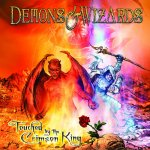

|
|
||
Demons & Wizards : Touched by the Crimson King (2005) |
|

http://www.demons-wizards.com |
1. Crimson King 5:47 |
7.4/10 |
|
De nuevo juntos, Hansi Kürsch, cantante de Blind Guardian y Jon Schaffer, guitarrista y líder de Iced Earth, colaboran en el último lanzamiento de su proyecto Demons & Wizards, titulado "Touched by the Crimson King". Con referencias literarias, como el Crimson King de la serie de la torre oscura de Stephen King o al retrato de Dorian Grey de Oscar Wilde, éste se puede definir como un disco conceptual de temática bastante oscura. El disco empieza como se puede esperar: uno de los característicos riffs rápidos y fuertemente muteados de la guitarra de Schaffer, y un coro más del estilo de Blind Guardian, delinean "Crimson King" entre la velocidad, la fuerza, la épica y la melodía, que son la suma de lo mejor de ambos protagonistas. "Beneath these waves" mantiene la fuerza, aunque reduce el tempo, y destaca la melodía en el estribillo. El doble bombo rescata la contundencia en "Terror train", tema más lúgubre que los primeros, con algunos coros pero menos melódico que los anteriores. A partir de aquí el disco pierde mucho y apenas ofrece algunos elementos de interés: "Seize the day" es un tema lento, previsible y carente de fuerza o emoción. "The gunslinger" arranca despacio, en acústico, pero pronto explota gracias al doble bombo, a la fuerte distorsión de la guitarra de Schaffer, y a un estribillo que podría haber firmado Blind Guardian en su último disco. "Love's tragedy asunder" es una balada, en un estilo que D&W ya explotaron en su primer disco, con partes acústica y otras distorsionadas alternadas, donde la melodía se fundamenta en la voz de Hansi Kürsch. "Wicked witch" es otra balada, completamente acústica, melódica y con bastantes coros, pero sin brillo. "Dorian" recupera la distorsión, pero sobre un riff repetitivo y poco original que no conduce adecuadamente al estribillo, que además no está bien resuelto. La segunda parte de la canción, lenta y monótona, tampoco logra mantener el interés del oyente al no dar la sensación de que la canción lleva a alguna parte. "Down where I am" es otra balada más, de nuevo con parte acústica y distorsionada, un poco más interesante que las anteriores, pero que al sumarse a éstas, hace demasiados minutos acústicos en un disco que debería ser de heavy metal. El disco lo termina una versión de un tema de Led Zeppelin, "Inmigrant Song", llamativo y bien realizado. Aunque siempre es difícil hacer una crítica negativa a dos personajes tan conocidos y con tantos discos buenos en su haber como Hansi Kürsch y Jon Schaffer, este disco es peor que el anterior, y no mejora los defectos de éste: las progresiones de acordes y las melodías siguen siendo previsibles, la guitarra es contundente pero poco original, y además añade pegas nuevas, como la gran cantidad de minutos lentos del disco: éste se desequilibra y acaba por resultar aburrido a tramos. Si además resulta que este disco no tiene ningún tema realmente muy bueno (en el anterior había dos canciones fantásticas) la conclusión no puede ser demasiado buena: una oportunidad desperdiciada para dos grandes nombres del metal que deberían ser capaces de hacer algo mucho más grande. |
||
- Crítica escrita por Rubén Béjar - |
||